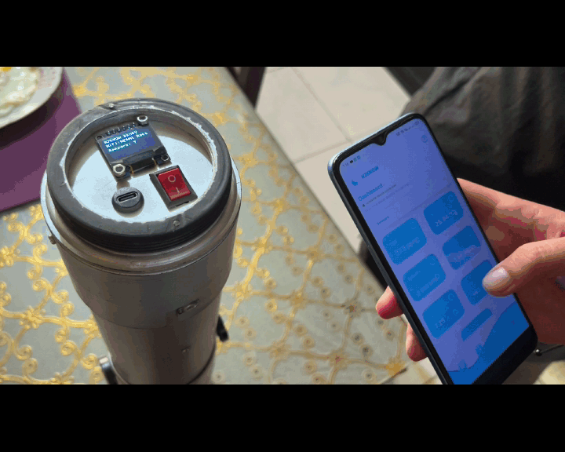
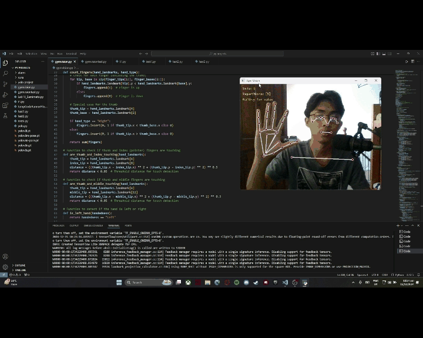

Kenneth V. Sarmiento
Computer Engineering graduate building practical expertise in Windows Server, Active Directory, and Cisco routing & switching — from home-lab infrastructure to hands-on IT support.
Experience
- Troubleshot IT issues and tracked support requests, supporting timely resolution and daily operations.
- Maintained product and technical documentation, improving accuracy and operational compliance.
- Communicated IT service offerings and identified prospective clients' technology requirements.
- Supported administrative and technical tasks involving documentation, organization, and stakeholder coordination.
Featured Demo

Windows Server & Active Directory Home Lab
A self-built enterprise-style environment in VMware, centralizing user, group, and computer management. Configured GPOs, file services, NTFS/share permissions, ABE, FSRM, mapped drives, and password policies to implement centralized access control. Created restricted service accounts with automated workstation logon for least-privilege access management.
Other Projects

IoT-Based Early Screening System for Tap Water Safety Using Physicochemical Parameters
Designed the 3D model and outer casing to securely hold and protect the hardware parts. Developed the UI and app features using Flutter combined with Figma to make it easy for users to see water quality data in real time. Implemented database connectivity using Firebase to securely store and retrieve physicochemical parameters, enabling data history analysis and automated safety alerts.
Watch on YouTube
GymVision: Computer Vision-based Workout Counter with Hand Gesture Control
Trained the MediaPipe hand-tracking model to recognize custom hand gestures for touchless workout control and exercise counting. Developed motion and angle detection features to improve workout tracking and support more exercise types. Added computer vision features to improve user interaction and automate workout monitoring during fitness sessions.
Watch on YouTubeCisco Packet Tracer Networking Home Lab
Configured routers and switches via Cisco IOS CLI with IPv4 addressing, subnetting, VLANs, and static routing. Diagnosed connectivity issues through structured troubleshooting of routing and ARP tables.
Technical Skills
System Administration
Windows Server, Active Directory, Group Policy, User & Group Management, File Services, NTFS & Share Permissions, Endpoint Administration
Networking
TCP/IP, IPv4 Addressing, Subnetting, LAN, DNS, Basic Routing & Switching, VLANs
IT Support
Technical Troubleshooting, IT Documentation, Access Control, System Configuration, Operational Compliance
Applications & Database
Flutter, Firebase, SQL, Python, Java, VMware, VS Code, Wireshark